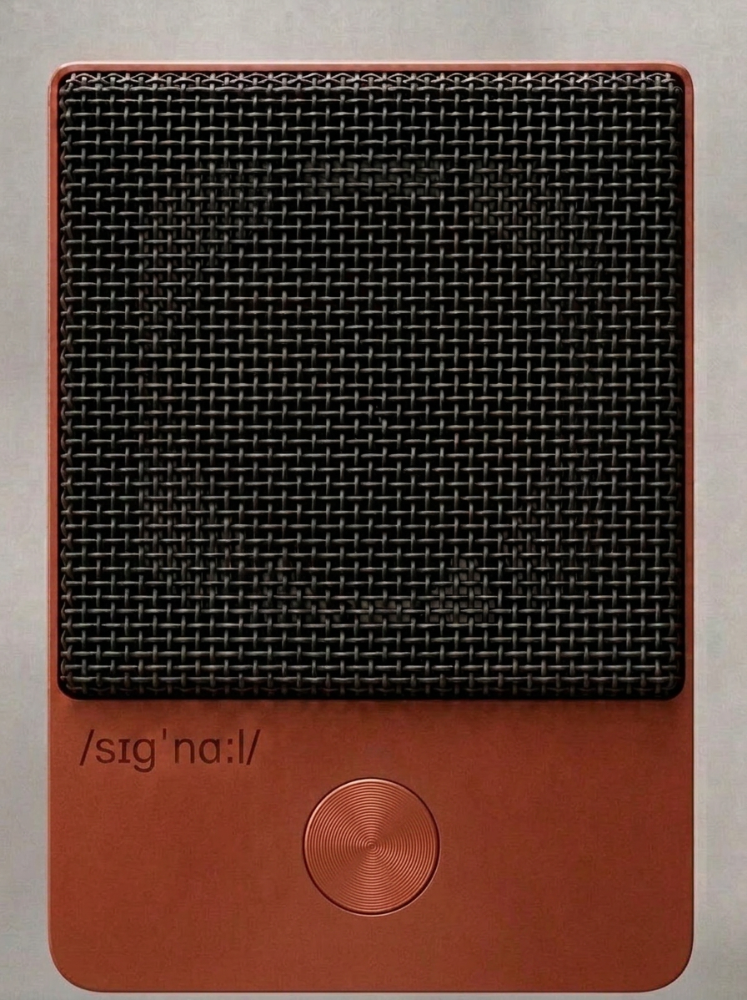

Enter password to view.
Skincare is the daily practice for the surface of you. Signal is the daily practice for the inside — the cells that run every system in your body. Same shape. Same rhythm. The part that's been missing from your shelf because no one built the format right.
Signal is as shoppable as a multivitamin — universal, daily, obvious, no explanation required. And as elevated as skincare — a ritual you don't skip, a practice that becomes identity. The foundation that's been missing from your shelf.
Skincare built a category worth over $150B because somebody taught you the word routine. Signal is the same move, for what's underneath.
Before we tell you what signal does, we owe you the two answers most supplement brands skip. They’re not garnish. They’re the entry condition.
Can you cancel? Subscribing to signal takes one tap. Canceling signal takes one tap. Same screen. No phone call. No retention page that tries to talk you out of it. No “are you sure?” friction. If you can sign up in one tap, you can cancel in one tap. The cancel button is the brand.
Why should you believe the science? We don’t tell you what to feel. We tell you what’s in the packet, in what amount, with the actual peer-reviewed evidence behind each ingredient — each one carrying its own registered brand and its own clinical track record at the dose we use. Function over fiction. Mechanism is what we sell; outcomes are what your other supplements promise. The mood after AG1, Lemme, and Care/of isn’t an attack on supplements — it’s a defense against marketing dressed up as science. We agree with it. We built signal against it.
Two answers before any mechanism claim. Both belong on the way in — not buried in the FAQ. If the cancel button is the brand, the claims discipline is the contract.
Every cell in your body runs on ATP — the molecule that powers everything cells do. Repair DNA. Build proteins. Fire a thought. But ATP doesn't work alone. It only does its job when magnesium is attached to it. About 9 out of 10 ATP molecules in your cells carry magnesium. The rest sit idle.
And energy is just the start. Magnesium activates more than 600 enzymes — the molecular machinery your cells use to repair DNA, build proteins, send nerve signals, contract muscle, keep the heart firing in rhythm, and form bone. Most of what happens inside a cell, magnesium is what makes it possible.
Creatine is the fastest way your cells recharge ATP. That recharge step needs magnesium too.
The upstream machinery is quietly underpowered before you take another supplement on top of it. Most supplements ask your cells to do work. The foundation is what gives the machinery the ability to do it.
Every signal SKU carries magnesium — in the form that fits the layer. Bisglycinate in the foundation and the daily fuel, where the cell needs to activate.
The daily core act. A soft-chew packet — one substrate chew + one keystone chew, two chews at 90 seconds each. Two-tier transitional flavor profile (plus grounded clarity post-chew). Seven registered ingredient brands plus a phospholipid complex. Mechanism-only claims. The multi-system daily core that everything else stacks onto. 30 packets per container, one month at a time.
The ATP-machinery layer underneath the foundation. Your cells burn ATP every second. Creatine recycles it. Magnesium activates it. Ribose feeds it. Betaine builds it. Methylated B-vitamins enable it. A packet a day — two pearl chews — the daily fuel layer. Five branded active ingredients, one ATP-machinery story: NNB Pürest Creatine™ + Albion TRAACS® Mg bisglycinate + BetaPower® Betaine (TMG) + Bioenergy Ribose® + active-form methylated B-complex. Two-tier transitional flavor profile — very subtle and natural. No sugar, no sugar alcohols. 30 packets per carton — one month at a time. (Working name; final name & focus in development.)




A pill is forgotten. A powder is a project. A gummy hides the dose in sugar. A capsule asks for water. A chew is the only format that's daily, dosed, and ritualized — without water, without mixing, without pretending to be candy.
Hi-Chew–adjacent matrix. Hard initial bite. Progressive ninety-second dissolve. Two chews per packet. The format is the practice.
Each SKU carries a two-tier transitional flavor profile — an opening that transitions into a close. The N°001 foundation chew expresses that shape across three sensory phases over a thirty-to-sixty-second consumption window. A single uniform soft chew matrix — Hi-Chew–adjacent. Not a gummy. Not pectin-set. Not gelatin-only. Not filled. Not co-extruded. Three phases of flavor inside one chew, plus a body-feel after.
Phase 1 — the bright bite (0–5 sec). First chew. The lightest top notes flash off the moment saliva touches the chew — water-soluble, fast. Bright. Awakening. Immediate. Layered underneath, a cool sensation you barely register.
Phase 2 — the warm heart (10–30 sec). Mid-chew. The middle layer releases as the chew softens and opens up. Gingerol (from ginger) and cinnamaldehyde (from cinnamon) carry the heart of the flavor.
Phase 3 — the lingering close (30–60 sec). Late chew and finish. The heavier base notes stay last — the oil-soluble ones release slowly as the chew finishes dissolving. A satisfying, lingering close. Underneath, a faint warmth you barely register.
Plus the post-chew body-feel: in the twenty to sixty minutes after, a sense of grounded clarity. Warm. Settled. Distinct from caffeine. Not part of the flavor arc itself — the daily proof that something is happening underneath.
SuppCo is a supplement-tracking app where stackers log what they actually take and share their stacks with each other. Past 200,000 products tracked, tens of thousands of users actively logging — their top-stacked list is the closest thing the supplement industry has to a real-time index of what the practice looks like in 2026.
In SuppCo's 2026 top ten, creatine claims three of the slots — across brands targeting completely different audiences. Roughly a third of the people stacking creatine are women; the core demographic is in their thirties and forties; and they're taking it for cognitive function and everyday energy as much as for the gym. Magnesium glycinate shows up three times too, across price tiers from mass-market (Nature's Bounty) to practitioner-grade (Pure Encapsulations). Pure Encapsulations Magnesium Glycinate alone has been added by 25,386 unique users in 2026 — the biggest upward jump on the list.
signal N°002 is creatine + magnesium — and the three ATP cofactors that make them work — in one packet, two chews. We didn't pick the molecules. The stackers did. We built the chew that makes the stack a single act. The daily fuel layer sits underneath the foundation; together they're the daily practice.
signal N°001 — the foundation (multi-system daily core). signal N°002 — the daily fuel (the ATP-machinery layer; working name, final name & focus in development). Two touchpoints, same shape as a skincare routine.
Every future product extends the daily practice — rhythm, cadence, format. Never into outcome categories. We will never make signal Hair. Never signal Sleep. Never signal Focus. Those already exist; they're the supplements the foundation supports.
Most supplements lose to geography. They get tucked into a cabinet, then a drawer, then forgotten. The product you don't see is the product you stop taking. Adherence is a retention problem before it's a formulation problem. So we designed against the cabinet.

A low paperboard tray, signal red. Four clear acetate dividers run its length, with quiet etchings — frosted, no ink, only legible at angle. Thirty packets stand on edge between the dividers. Open top. Nothing hidden. Every glance is a reminder.
The whole thing arrives every month in a tight-fit kraft outer that doubles as the mailer. No separate sleeve. No first order, no refill — same form, every order, for years.
When the last packet is gone, the empty vessel reveals a debossed / sɪgnɑːl / on its floor. Then the next month's vessel arrives.
Counted daily. Made to be replaced. The vessel is the adherence mechanism — because the supplement you see is the supplement you take.
The vessel sits next to a habit you already have. After your skincare. After your coffee. After your teeth. The practice stacks onto behavior that's already in your rhythm. Not "every morning." Not "with breakfast." After the thing you already do.
The foundation keystone chew — the red one — carries one ionic activator plus three mitochondrial protectors — one ion that turns the cell's energy machinery on, plus three molecules that keep the mitochondria healthy. Each is a registered ingredient brand with its own peer-reviewed clinical evidence at the dose we use. No proprietary blends. No "& other ingredients." The fine print is the whole print.

The amber substrate chew carries a phospholipid complex — the membrane building blocks your cells rebuild with — alongside BioPQQ® (Mitsubishi Gas Chemical) · Puremidine™ (NNB Nutrition) · gingerol. Plus sensory-dose cofactors in the keystone chew: Suntheanine® (Taiyo) + N-Acetyl L-Tyrosine + L-citrulline. (Methylated B-complex lives in N°002 — the daily fuel tier — not here. Stack the two SKUs and you cover the full daily picture without overlap.)
Mechanism only. No outcome claims. We describe what the cell uses, what the machinery does. We don't sell you an energy feeling, a skin outcome, a sleep fix. Specialist outcomes are the job of specialist supplements. Our job is the foundation they all depend on.
In April 2026, Unilever acquired Grüns — a daily-greens packet brand, three years old, packet-in-container format — for $1.2 billion. Unilever didn't buy a formulation; they bought a habit: 95,000+ five-star reviews, 1M+ customers, 10M gummies shipped daily. The daily-packet architecture at premium price point is now validated at acquisition scale.
At the same time, cellular-health has become the dominant trade-press narrative of 2026 — NutraIngredients, BeautyMatter, Vogue Scandinavia, Glossy all running "mitochondrial" or "cellular energy" framings. The phrase is everywhere. No consumer brand has claimed it yet. That won't last.
The 2025 Weissig review in the Journal of Mitochondria, Plastids and Endosymbiosis argued that mitochondrial dysfunction sits upstream of all other hallmarks of aging — DNA repair, autophagy, telomere maintenance, collagen synthesis. When the energy economy fails, everything downstream underperforms. That biology is what signal sits on top of. Every specialist supplement on your shelf is asking cells to do work. Signal is what lets them.
So why not just build another supplement? The macro signals are green — you'd expect us to pick a lane. We're not picking one. Every supplement on the shelf plays the same game: sleep, energy, focus, beauty, longevity. You don't win a crowded game by competing harder inside it. You win by refusing to play, and opening a new one small enough to anchor.
AG1 sells you the whole answer in a scoop. IM8 ships the same architecture in a different package. We don't compete with them — we sit underneath them. Signal gives cells what every greens drink, every multivitamin, every specialist supplement on your shelf depends on to actually work. Necessary, but not sufficient — your cells need this base to run; they also need the targeted work the rest of your stack does. The foundation underneath the categories — every other supplement on your shelf is built to work on top of the cellular machinery signal maintains.
For the skeptic who already takes everything. Your shelf isn’t an accident — you read the papers, you dose by the evidence, you can spot fairy dust across the room. So you already know the uncomfortable part: every active you take asks your cells to do work, and almost nothing on the shelf gives the cells what it takes to do it. Foundation first. Everything stacks. Signal isn’t one more bottle competing for a slot — it’s the cellular-energy layer the whole stack is standing on. We name the dose, not the outcome, and we don’t ask you to drop a single thing you’re already doing.
The first-mover window is short. Competitors will enter; a new equilibrium will form around whoever anchors it. What survives is the anchor position — brand, habit, distribution. We're building to be the anchor, not another bottle on the shelf.
The category position is the thesis. Three assets are the moat:
Send a Signal. A $5 physical-mail demo with the brand name as the verb. No supplement runs this. Acquisition channel and category-creation engine in one mechanic.
The signal sound bite. Two tones start 10 hertz apart (a binaural beat) and drift to unison at A4. Short, specific, ownable. Audio meant to be heard once at the first ritual and recalled across every subsequent one — a sonic asset no other supplement has bothered to build.
The two-tier transitional flavor profile. Bright bite → warm heart → lingering close. A flavor system engineered to release in waves over a thirty-to-sixty-second window. The defining sensory signature — and the most consumer-facing brand asset signal owns.
Patents are table stakes. These are the things competitors can't retroactively assemble.
Most brands sell you the whole answer. We don’t. Signal is necessary, but not sufficient. Your cells run on ATP — and they also run on what you do with the rest of your day. The chew gives them the substrate. The way you live tells them when to use it.
That’s the practice. And the practice is how we begin to build a tribe — people who know the chew is one part of the practice, not the whole of it.
Exercise tells your cells to build more mitochondria. Signal gives those mitochondria the magnesium they need to fire. The chew is the substrate; the workout is the signal.
The practice: a walk after dinner. Slow stretches in the morning. Cells don't need to be punished — they need to be kept moving, daily, for life.
Deep sleep is when your cells take out the trash — clearing waste and rebuilding what got worn down. No supplement replaces that window. Signal supports the day; sleep does the work overnight.
The practice: asleep by eleven. Awake with the light. The body clock is older than supplements, older than apps. The grandmother always knew.
Time-restricted eating triggers autophagy — your cells cleaning up their own damaged parts. Signal feeds the cells; fasting tells them when to clean house.
The practice: eat with the season. Lighter dinners. Hot rice congee when the body asks for ease. Less restriction, more rhythm.
Cold plunges and saunas trigger hormetic stress — the kind that tells cells to repair. Signal supplies the substrate for that repair; the temperature swing pulls the trigger.
The practice: slippers at home. Warm water, not cold. Keep the feet warm, the head cool. The body knew this before we measured it — the cells were listening the whole time.
Light at sunrise. Meals in the daylight window. Your cells run on a clock, and that clock answers to the sun. Signal supports the metabolism; the clock decides when to use it.
The practice: wake with the light. Eat with the day. Every culture that lasted noticed this same rhythm — the body has been keeping time since long before we measured it.
Magnesium is one mineral; sodium and potassium do the other half of the work. Cell membranes hold an electrical charge that depends on all three. Signal handles magnesium; you handle the rest.
The practice: warm water in the morning. Tea in the afternoon. Broth in winter. Minerals were always meant to come through food and water first — not just bottles.
This is how the tribe forms. Not around a product, but around a practice. We don’t sell you a daily practice. We hand you the part you can hold — and we show up for the rest of it. Every day. Together.
You don’t feel your moisturizer working. You wouldn’t stop using it. Skincare's job is upkeep — the felt-outcome stuff is what you go to a dermatologist for. Signal is the same shape. When you want to feel something, that's what your other supplements are for.
What you do feel from signal is the chew itself — the bite, the unfolding, the daily act. That's the receipt. What's happening biologically is upstream of feel. The ritual is the proof; your cells do the rest.
The supplements that promise a feel deliver one of three things: a stimulant, a placebo, or a 90-day outcome you mistake for the product. Signal is the floor under all of that. You don’t feel a foundation. You feel everything that stands on it.
You should eat real food. We agree.
The legitimate version of “just eat real food” isn’t an attack on supplements — it’s a defense of priorities. Food first. Whole. Cooked. Eaten with people. We don’t argue with that. We agree with it.
The version worth answering is the version that ends the conversation: that supplements are unnecessary, period, because food covers it. Here’s the math that breaks the argument.
Creatine. Five grams a day is the dose with thirty-plus years of evidence behind it. That dose lives in roughly a pound and a half of red meat. You’re not eating a pound and a half of red meat daily. We’re not, either. A packet of signal is five grams of creatine.
Magnesium. Modern soil has lost 25–50% of its magnesium content since the 1950s. The magnesium in spinach is real, but it’s a fraction of what spinach used to deliver. And most food carries the form your cells use least efficiently — magnesium bisglycinate (what’s in signal) absorbs at ~80%; the oxide form in most food and cheap supplements absorbs at ~4%.
The methylation pathway. About 40% of people carry a slower version of MTHFR — the enzyme that turns folic acid (vitamin B9 from food) into the form your cells can actually use. For them, food gives you folic acid the cells can’t fully activate. Signal gives you the already-converted (methylated) form your enzymes can use immediately.
This isn’t an argument that food is broken. Food is the most important daily practice you have. Signal is the practice that handles what food, at the doses food gives you, can’t.
This is a new daily practice. Every new practice needs a vocabulary, and a reason to start before the proof is in. Send a Signal gives both.
Anyone already in the practice can Send a Signal to one or two people closest to them — a sister, a partner, a parent, a best friend. The option appears at checkout, after they've committed to their own order. $5 — a price engineered to be honest — pays for one packet, mounted on a cream card, with an insert that teaches what signal is. No personalization. No sender note. Just the signal, arriving at a doorstep. The CTA on every card reads the same way: YOUR TURN → SEND A SIGNAL.
If a recipient asks what one packet does — nothing they can feel. That's not what it's there for. The packet is the format demo; the mechanism is what happens once signal is in their daily practice.


Pre-launch model assumptions. Per-send fulfillment, recipient-conversion, and effective unit cost will be measured against the M5–M8 milestone gate, not asserted before it.
That's the gifting story. The category story is bigger.
Every card is a small signal from someone already inside the practice — sent back to someone who hasn't started. Signal is a daily practice from a future where this is obvious; Send a Signal is how we let you start early. The product is the evidence. The practice is the point.
insdrwellness.com/send
Look at how the brand talks about sleep. Not "get eight hours." The deep-sleep window where the body cleans, repairs, and rebuilds — the hours no supplement can replace.
Look at how the brand talks about fasting. Not "try 16:8." Autophagy, the cellular cleanup that time-restricted eating triggers, and the seasons when the body asks for ease.
Look at how the brand talks about hydration. Not "drink more water." What mineral does what, what form pairs with what, and the minerals that were always meant to come through food first.
Every wellness brand names the same activities. We name what happens inside them. The depth has a source we don't put on the homepage and don't explain in the campaign. The customer who finds it notices without being told why. The customer who doesn't has a great daily foundation. Both readings are correct.
This second voice is quieter than the first. It comes from longer ago. And it's already running underneath everything you've seen.
A parent brand built to make daily upkeep a behavior, not a marketing word. Founded 2026. Bootstrap-launched. Habit-metric disciplined. Foundation-first positioning.
Concept origination, brand architecture, formulation direction. Owns the thesis end-to-end.
Operations, manufacturing relationships, supply chain, day-to-day execution. The ops counterweight to the brand lead.
Equity-aligned, operationally involved, public-facing identity partner. The face of the daily practice — across Asia and beyond.
Runs GNC Taiwan. Supplement-industry category expertise + retail/distribution access. The second half of the APAC arc.
signal N°001 — the foundation — ships Q4 2026. signal N°002, the daily fuel, arrives 2027. Founder's Price locks in for the first 500 names on N°001. The ritual starts before the product ships.